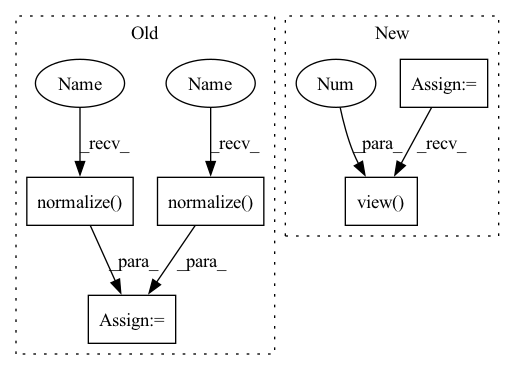

Pattern ID :7367

Before Change
def forward(self, input, label):
// --------------------------- cos(theta) & phi(theta) ---------------------------
cosine = F.linear(F.normalize(input), F.normalize(self.weight))
sine = torch.sqrt(1.0 - torch.pow(cosine, 2))
phi = cosine * self.cos_m - sine * self.sin_m
if self.easy_margin:
phi = torch.where(cosine > 0, phi, cosine)
else:
phi = torch.where(cosine > self.th, phi, cosine - self.mm)
// --------------------------- convert label to one-hot ---------------------------
// one_hot = torch.zeros(cosine.size(), requires_grad=True, device="cuda")
one_hot = torch.zeros(cosine.size(), device = "cuda")
one_hot.scatter_(1, label.view(-1, 1).long(), 1)
// -------------torch.where(out_i = {x_i if condition_i else y_i) -------------
output = (one_hot * phi) + ((1.0 - one_hot) * cosine) // you can use torch.where if your torch.__version__ is 0.4
After Change
def forward(self, embbedings, label):
embbedings = l2_norm(embbedings, axis = 1)
kernel_norm = l2_norm(self.kernel, axis = 0)
cos_theta = torch.mm(embbedings, kernel_norm)
cos_theta = cos_theta.clamp(-1, 1) // for numerical stability
with torch.no_grad():
origin_cos = cos_theta.clone()
target_logit = cos_theta[torch.arange(0, embbedings.size(0)), label].view(-1, 1)
sin_theta = torch.sqrt(1.0 - torch.pow(target_logit, 2))
cos_theta_m = target_logit * self.cos_m - sin_theta * self.sin_m //cos(target+margin)
if self.easy_margin:
In pattern: SUPERPATTERN
Frequency: 3
Non-data size: 5
Instances
Fragment ID: 24482677
Project Name: cavalleria/cavaface.pytorch
Commit Name: 3b84e7dee20887685ce3f9d7a63cb74db35147c3
Time: 2020-04-28
Author: 605370459@qq.com
File Name: head/metrics.py
M Class Name: ArcFace
N Class Name: ArcFace
M Method Name: forward(3)
N Method Name: forward(3)
M Parent Class: nn.Module
N Parent Class: nn.Module
M File Name: head/metrics.py
N File Name: head/metrics.py
M Start Line: 75
M End Line: 88
N Start Line: 80
N End Line: 96
'>
Before Change
def forward(self, input, label):
// --------------------------- cos(theta) & phi(theta) ---------------------------
cosine = F.linear(F.normalize(input), F.normalize(self.weight))
sine = torch.sqrt(1.0 - torch.pow(cosine, 2))
phi = cosine * self.cos_m - sine * self.sin_m
if self.easy_margin:
phi = torch.where(cosine > 0, phi, cosine)
else:
phi = torch.where(cosine > self.th, phi, cosine - self.mm)
// --------------------------- convert label to one-hot ---------------------------
// one_hot = torch.zeros(cosine.size(), requires_grad=True, device="cuda")
one_hot = torch.zeros(cosine.size(), device = "cuda")
one_hot.scatter_(1, label.view(-1, 1).long(), 1)
// -------------torch.where(out_i = {x_i if condition_i else y_i) -------------
output = (one_hot * phi) + ((1.0 - one_hot) * cosine) // you can use torch.where if your torch.__version__ is 0.4
After Change
def forward(self, embbedings, label):
embbedings = l2_norm(embbedings, axis = 1)
kernel_norm = l2_norm(self.kernel, axis = 0)
cos_theta = torch.mm(embbedings, kernel_norm)
cos_theta = cos_theta.clamp(-1, 1) // for numerical stability
with torch.no_grad():
origin_cos = cos_theta.clone()
target_logit = cos_theta[torch.arange(0, embbedings.size(0)), label].view(-1, 1)
sin_theta = torch.sqrt(1.0 - torch.pow(target_logit, 2))
cos_theta_m = target_logit * self.cos_m - sin_theta * self.sin_m //cos(target+margin)
if self.easy_margin:
'>
Fragment ID: 24482676
Project Name: cavalleria/cavaface.pytorch
Commit Name: 3b84e7dee20887685ce3f9d7a63cb74db35147c3
Time: 2020-04-28
Author: 605370459@qq.com
File Name: head/metrics.py
M Class Name: ArcFace
N Class Name: ArcFace
M Method Name: forward(3)
N Method Name: forward(3)
M Parent Class: nn.Module
N Parent Class: nn.Module
M File Name: head/metrics.py
N File Name: head/metrics.py
M Start Line: 75
M End Line: 88
N Start Line: 80
N End Line: 96
'>
Before Change
user = interaction[self.USER_ID]
u_embedding = self.get_user_embedding(user)
u_embedding = self.user_fc_layers(u_embedding).double()
u_embedding = F.normalize(u_embedding, p=2, dim=1)
if self.i_embedding is None:
self.i_embedding = self.get_item_embedding().double()
self.i_embedding = F.normalize(self.i_embedding, p=2, dim=1)
cos_similarity = torch.mm(u_embedding, self.i_embedding.t())
cos_similarity = torch.max(cos_similarity, self.min_y_hat)
return cos_similarity.view(-1)
After Change
self.i_embedding = self.get_item_embedding()
similarity = torch.mm(u_embedding, self.i_embedding.t())
similarity = self.sigmoid(similarity)
return similarity.view(-1)
'>
Fragment ID: 24482678
Project Name: rucaibox/recbole
Commit Name: 70fb981f8630e6232f147012bc1c21f57385239f
Time: 2020-09-29
Author: 893833413@qq.com
File Name: recbox/model/general_recommender/dmf.py
M Class Name: DMF
N Class Name: DMF
M Method Name: full_sort_predict(2)
N Method Name: full_sort_predict(2)
M Parent Class: GeneralRecommender
N Parent Class: GeneralRecommender
M File Name: recbox/model/general_recommender/dmf.py
N File Name: recbox/model/general_recommender/dmf.py
M Start Line: 176
M End Line: 186
N Start Line: 181
N End Line: 189